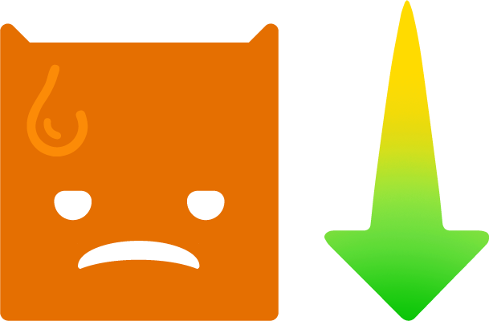

9999
8% Del Total
MUY INSATISFECHO
9
7.9% Del Total
INSATISFECHO
9
7.9% Del Total
NEUTRAL
9
7.9% Del Total
SATISFECHO
9
7.9% Del Total
MUY SATISFECHO
8%
46/575
En esta sección, analiza las calificaciones de 'Muy Insatisfecho' e 'Insatisfecho' para comprender la evolución mensual del nivel de insatisfacción de manera porcentual.

58,33%
123/31 = 3.96 Calificaciones por día
123/17 = 7.23 Calificaciones por día
El 11 de Enero tuvo mayor actividad
Si quieres conocer más sobre las calificaciones, te invitamos a hacer clic aquí. Accede a la tabla completa con información detallada sobre cada evaluación. ¡Agradecemos tu participación!